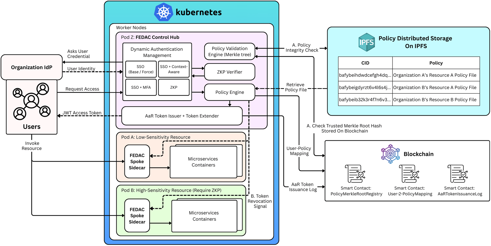

Research, First author
FEDAC: zero-trust access checks that stay fast
Check the caller carefully once, then check a short-lived pass cheaply on every call.
Why it matters
Organisations increasingly share cloud services across teams and with partners. Once signed in, users often receive the same broad access everywhere, whether the resource is low-risk or highly sensitive. Stronger checks typically add latency to every request, and controls that are too slow tend to be bypassed or disabled.
- Zero trust
- Zero-knowledge proofs
- Service mesh
- Blockchain audit
- Cloud benchmarking
- Go
- Rust
- Groth16 zk-SNARKs
- Envoy and Istio
- IPFS
- AWS EKS


The gap
In federated Kubernetes (several clusters, several organisations), the built-in RBAC is static: a role stays the same whichever service is called and however risky the request is. Adding risk-based sign-in, private cross-domain identities and tamper-evident policies usually puts heavy cryptographic or on-chain work on every request. The published designs we studied did not combine all of these without slowing requests.
What is new
Split the expensive work from the per-request check. A hub verifies the caller once, choosing the sign-in strength per service by its sensitivity: single sign-on, a one-time code, a context risk check, then a zero-knowledge proof. It checks the policy, stored on IPFS, against a Merkle root held on a blockchain, then issues a short-lived token limited to the service asked for. A sidecar checks that token locally through Envoy in Istio, with no network call. If a policy is tampered with or a security event occurs, only tokens for the affected services are revoked.
What I built
As first author, supervised by Prof. Fugkeaw, I worked on the research design and built the implementation in Go and Rust: the hub, the Envoy external-authorisation sidecar, four sign-in tiers including a Groth16 zero-knowledge verifier, targeted revocation and blockchain anchoring. I also re-implemented published designs and compared them with FEDAC on AWS EKS.
Result
- Paper under review
Measured on AWS EKS. FEDAC was compared with three re-implemented published designs (Heimdall, ZKP-CapBAC and Atalay); the full comparison is in the paper, which is under review.
Where it helps
Example: a compliance analyst at a financial firm opens an audit dashboard, a risk-model service and a trading service in one session. Each service asks for the sign-in strength it needs, each call is checked on the spot, and every policy change can be audited later.
Limits and next
The first sign-in is still the slow step, so FEDAC suits services that call each other again and again. It was tested in one AWS region on a test blockchain, and the prototype signs private attributes but does not encrypt them yet. Hardware-backed keys and federation across regions are next.
Lessons learned
Separate the checks that must run on every request from those that can run once. Strong assurance and low latency can coexist when the expensive verification is done once and its result travels as a short-lived, narrowly scoped token.
How it works
- Sign in once at the hub
- Policy checked against an on-chain root
- Short-lived token for the service asked for
- Sidecar checks each call locally